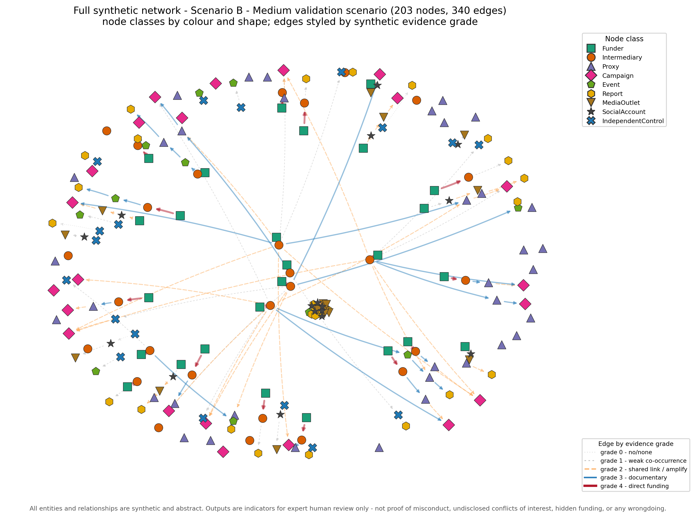
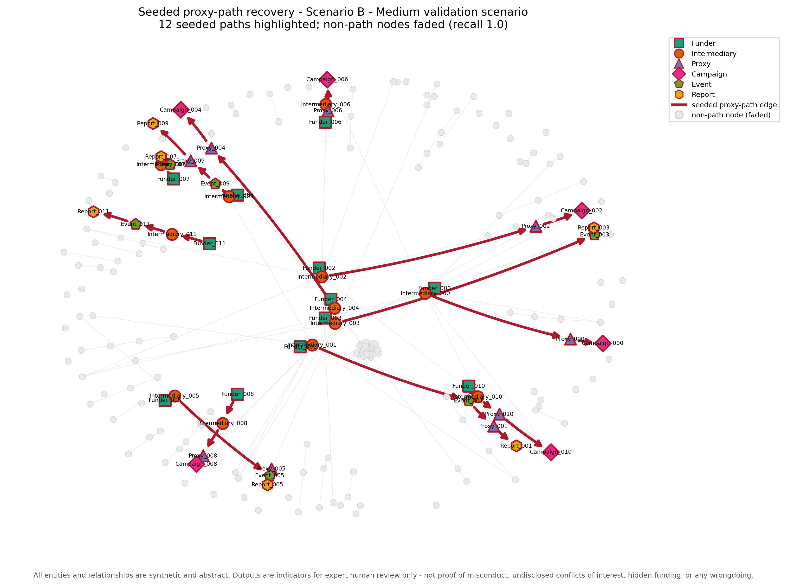
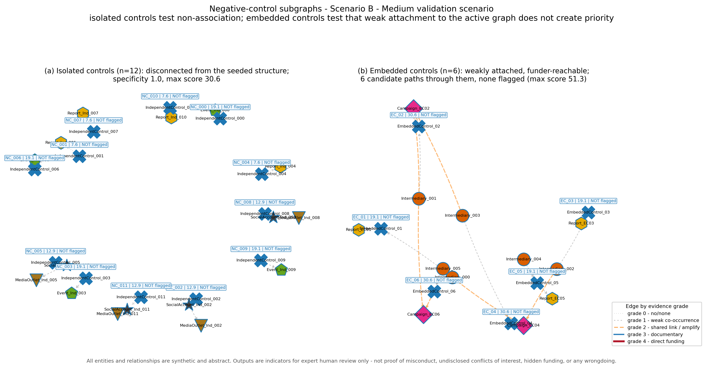
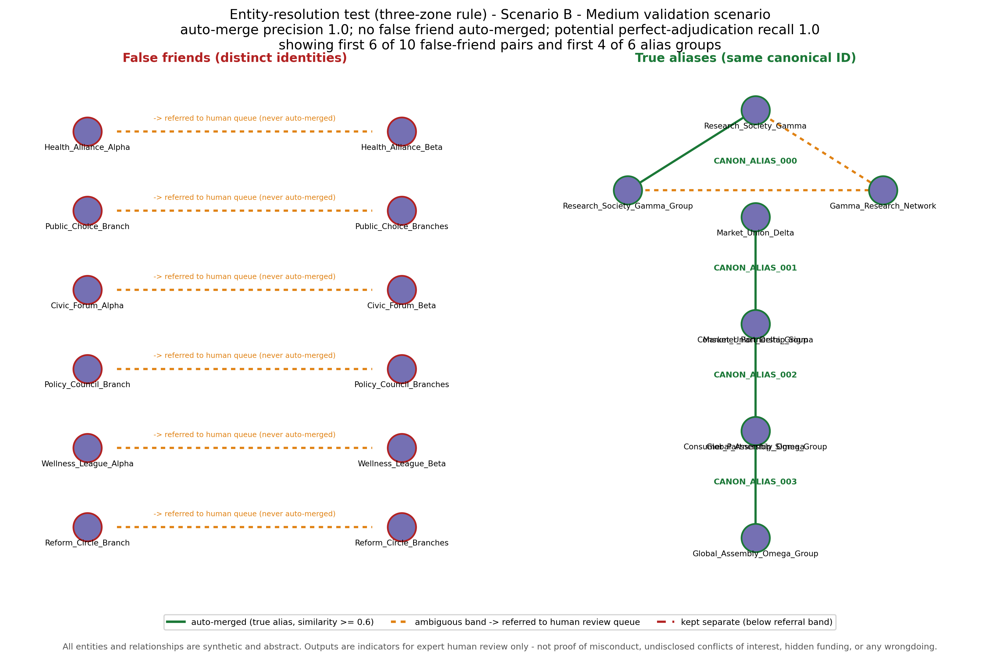
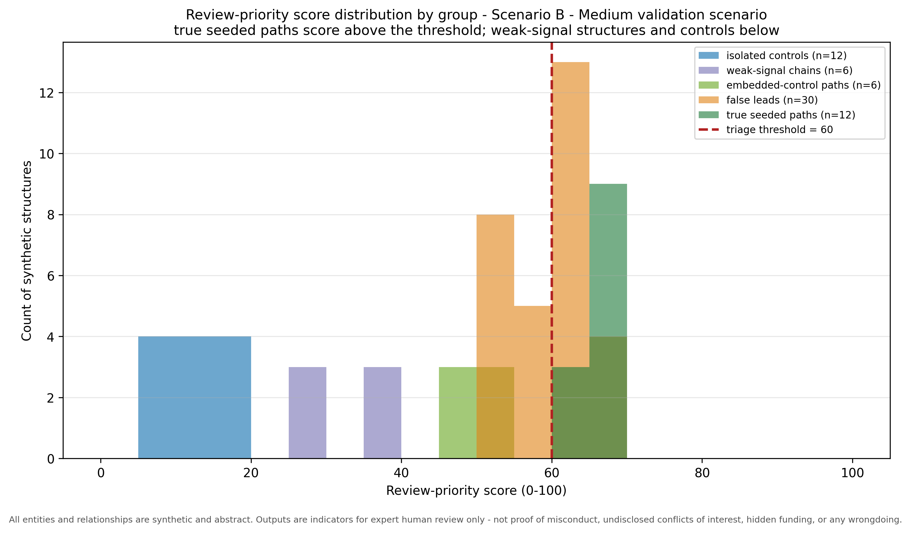
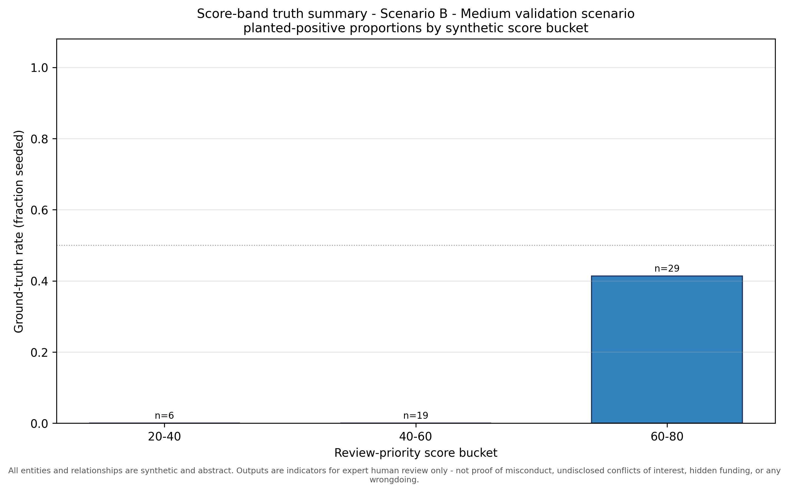
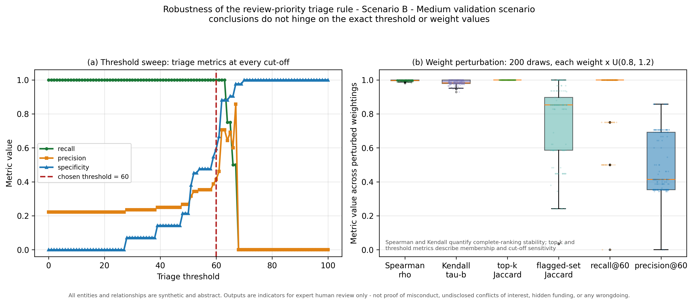

Synthetic validation harness (seed = 142).
| Quantity | Value |
|---|---|
| Total nodes | 203 |
| Total edges | 340 |
| Node classes | 9 |
| Relationship types | 10 |
| Seeded proxy paths | 12 |
| Candidate paths | 54 |
| False-friend entities | 20 |
| True-alias groups | 6 |
| Negative-control subgraphs | 18 |
| Weak-signal chains | 6 |
Triage threshold: 60.0 / 100. Scores are triage indicators for expert review only.
| Path ID | Node sequence | Relationship types | Grades |
|---|---|---|---|
| GT_PATH_000 | Funder_000 -> Intermediary_000 -> Proxy_000 -> Campaign_000 | funds -> partners_with -> hosts | 4 -> 3 -> 3 |
| GT_PATH_001 | Funder_001 -> Intermediary_001 -> Event_001 -> Proxy_001 -> Report_001 | funds -> hosts -> speaks_at -> publishes | 4 -> 3 -> 3 -> 3 |
| GT_PATH_002 | Funder_002 -> Intermediary_002 -> Proxy_002 -> Campaign_002 | funds -> partners_with -> amplifies | 4 -> 3 -> 2 |
| GT_PATH_003 | Funder_003 -> Intermediary_003 -> Event_003 -> Report_003 | funds -> hosts -> publishes | 4 -> 3 -> 3 |
| GT_PATH_004 | Funder_004 -> Intermediary_004 -> Proxy_004 -> Campaign_004 | funds -> partners_with -> hosts | 4 -> 3 -> 3 |
| GT_PATH_005 | Funder_005 -> Intermediary_005 -> Event_005 -> Proxy_005 -> Report_005 | funds -> hosts -> speaks_at -> publishes | 4 -> 3 -> 3 -> 3 |
| GT_PATH_006 | Funder_006 -> Intermediary_006 -> Proxy_006 -> Campaign_006 | funds -> partners_with -> amplifies | 4 -> 3 -> 2 |
| GT_PATH_007 | Funder_007 -> Intermediary_007 -> Event_007 -> Report_007 | funds -> hosts -> publishes | 4 -> 3 -> 3 |
| GT_PATH_008 | Funder_008 -> Intermediary_008 -> Proxy_008 -> Campaign_008 | funds -> partners_with -> hosts | 4 -> 3 -> 3 |
| GT_PATH_009 | Funder_009 -> Intermediary_009 -> Event_009 -> Proxy_009 -> Report_009 | funds -> hosts -> speaks_at -> publishes | 4 -> 3 -> 3 -> 3 |
| GT_PATH_010 | Funder_010 -> Intermediary_010 -> Proxy_010 -> Campaign_010 | funds -> partners_with -> amplifies | 4 -> 3 -> 2 |
| GT_PATH_011 | Funder_011 -> Intermediary_011 -> Event_011 -> Report_011 | funds -> hosts -> publishes | 4 -> 3 -> 3 |
| ID | Node sequence | Score |
|---|---|---|
| GT_PATH_000 | Funder_000 -> Intermediary_000 -> Proxy_000 -> Campaign_000 | 67.80 |
| GT_PATH_004 | Funder_004 -> Intermediary_004 -> Proxy_004 -> Campaign_004 | 67.80 |
| GT_PATH_007 | Funder_007 -> Intermediary_007 -> Event_007 -> Report_007 | 67.80 |
| GT_PATH_008 | Funder_008 -> Intermediary_008 -> Proxy_008 -> Campaign_008 | 67.80 |
| GT_PATH_003 | Funder_003 -> Intermediary_003 -> Event_003 -> Report_003 | 67.80 |
| GT_PATH_011 | Funder_011 -> Intermediary_011 -> Event_011 -> Report_011 | 67.80 |
| GT_PATH_005 | Funder_005 -> Intermediary_005 -> Event_005 -> Proxy_005 -> Report_005 | 65.78 |
| GT_PATH_009 | Funder_009 -> Intermediary_009 -> Event_009 -> Proxy_009 -> Report_009 | 65.78 |
| GT_PATH_001 | Funder_001 -> Intermediary_001 -> Event_001 -> Proxy_001 -> Report_001 | 65.78 |
| GT_PATH_002 | Funder_002 -> Intermediary_002 -> Proxy_002 -> Campaign_002 | 63.80 |
| GT_PATH_010 | Funder_010 -> Intermediary_010 -> Proxy_010 -> Campaign_010 | 63.80 |
| GT_PATH_006 | Funder_006 -> Intermediary_006 -> Proxy_006 -> Campaign_006 | 63.80 |
Path-recovery recall 1.0; precision 0.4138.
None - all seeded proxy paths were recovered.
| Candidate ID | Node sequence | Score |
|---|---|---|
| CAND_0013 | Funder_001 -> Intermediary_001 -> Campaign_L007 | 69.45 |
| CAND_0018 | Funder_002 -> Intermediary_002 -> Campaign_WC02 | 66.45 |
| CAND_0025 | Funder_003 -> Intermediary_003 -> Campaign_WC04 | 66.45 |
| CAND_0004 | Funder_000 -> Intermediary_000 -> Campaign_L005 | 66.45 |
| CAND_0014 | Funder_001 -> Intermediary_001 -> Campaign_EC06 | 64.20 |
| CAND_0016 | Funder_001 -> Intermediary_001 -> Campaign_008 | 61.70 |
| CAND_0042 | Funder_L001 -> Intermediary_L001 -> Proxy_L001 -> Campaign_L001 | 61.30 |
| CAND_0028 | Funder_003 -> Intermediary_003 -> Proxy_005 -> Report_005 | 61.30 |
| CAND_0019 | Funder_002 -> Intermediary_002 -> Proxy_004 -> Campaign_004 | 61.30 |
| CAND_0044 | Funder_L003 -> Intermediary_L003 -> Proxy_L003 -> Campaign_L003 | 61.30 |
| CAND_0048 | Funder_L007 -> Intermediary_L007 -> Proxy_L007 -> Campaign_L007 | 61.30 |
| CAND_0046 | Funder_L005 -> Intermediary_L005 -> Proxy_L005 -> Campaign_L005 | 61.30 |
| CAND_0003 | Funder_000 -> Intermediary_000 -> Campaign_EC04 | 61.20 |
| CAND_0022 | Funder_002 -> Intermediary_002 -> Campaign_L001 | 61.20 |
| CAND_0008 | Funder_000 -> Intermediary_000 -> Campaign_010 | 60.70 |
| CAND_0012 | Funder_001 -> Intermediary_001 -> Campaign_EC02 | 60.70 |
| CAND_0024 | Funder_002 -> Intermediary_002 -> Campaign_EC04 | 60.70 |
Passed to human review as possible leads only. 13 contain a weak (grade ≤ 2) hop; 4 consist entirely of documentary-grade (≥ 3) hops and require full manual verification.
| Control ID | Type | Nodes | Score | Flagged | Explanation |
|---|---|---|---|---|---|
| NC_000 | isolated | IndependentControl_000; Event_Ind_000 | 19.10 | 0 | score 19.10 is below the threshold of 60.0; this isolated control (disconnected from the seeded structure) is correctly not flagged |
| NC_001 | isolated | IndependentControl_001; Report_Ind_001 | 7.60 | 0 | score 7.60 is below the threshold of 60.0; this isolated control (disconnected from the seeded structure) is correctly not flagged |
| NC_002 | isolated | IndependentControl_002; SocialAccount_Ind_002; MediaOutlet_Ind_002 | 12.95 | 0 | score 12.95 is below the threshold of 60.0; this isolated control (disconnected from the seeded structure) is correctly not flagged |
| NC_003 | isolated | IndependentControl_003; Event_Ind_003 | 19.10 | 0 | score 19.10 is below the threshold of 60.0; this isolated control (disconnected from the seeded structure) is correctly not flagged |
| NC_004 | isolated | IndependentControl_004; Report_Ind_004 | 7.60 | 0 | score 7.60 is below the threshold of 60.0; this isolated control (disconnected from the seeded structure) is correctly not flagged |
| NC_005 | isolated | IndependentControl_005; SocialAccount_Ind_005; MediaOutlet_Ind_005 | 12.95 | 0 | score 12.95 is below the threshold of 60.0; this isolated control (disconnected from the seeded structure) is correctly not flagged |
| NC_006 | isolated | IndependentControl_006; Event_Ind_006 | 19.10 | 0 | score 19.10 is below the threshold of 60.0; this isolated control (disconnected from the seeded structure) is correctly not flagged |
| NC_007 | isolated | IndependentControl_007; Report_Ind_007 | 7.60 | 0 | score 7.60 is below the threshold of 60.0; this isolated control (disconnected from the seeded structure) is correctly not flagged |
| NC_008 | isolated | IndependentControl_008; SocialAccount_Ind_008; MediaOutlet_Ind_008 | 12.95 | 0 | score 12.95 is below the threshold of 60.0; this isolated control (disconnected from the seeded structure) is correctly not flagged |
| NC_009 | isolated | IndependentControl_009; Event_Ind_009 | 19.10 | 0 | score 19.10 is below the threshold of 60.0; this isolated control (disconnected from the seeded structure) is correctly not flagged |
| NC_010 | isolated | IndependentControl_010; Report_Ind_010 | 7.60 | 0 | score 7.60 is below the threshold of 60.0; this isolated control (disconnected from the seeded structure) is correctly not flagged |
| NC_011 | isolated | IndependentControl_011; SocialAccount_Ind_011; MediaOutlet_Ind_011 | 12.95 | 0 | score 12.95 is below the threshold of 60.0; this isolated control (disconnected from the seeded structure) is correctly not flagged |
| EC_01 | embedded | EmbeddedControl_01; Report_EC01 | 19.10 | 0 | score 19.10 is below the threshold of 60.0; this embedded control (weakly attached to the active graph, reachable from a funder) is correctly not flagged |
| EC_02 | embedded | EmbeddedControl_02; Campaign_EC02 | 30.60 | 0 | score 30.60 is below the threshold of 60.0; this embedded control (weakly attached to the active graph, reachable from a funder) is correctly not flagged |
| EC_03 | embedded | EmbeddedControl_03; Report_EC03 | 19.10 | 0 | score 19.10 is below the threshold of 60.0; this embedded control (weakly attached to the active graph, reachable from a funder) is correctly not flagged |
| EC_04 | embedded | EmbeddedControl_04; Campaign_EC04 | 30.60 | 0 | score 30.60 is below the threshold of 60.0; this embedded control (weakly attached to the active graph, reachable from a funder) is correctly not flagged |
| EC_05 | embedded | EmbeddedControl_05; Report_EC05 | 19.10 | 0 | score 19.10 is below the threshold of 60.0; this embedded control (weakly attached to the active graph, reachable from a funder) is correctly not flagged |
| EC_06 | embedded | EmbeddedControl_06; Campaign_EC06 | 30.60 | 0 | score 30.60 is below the threshold of 60.0; this embedded control (weakly attached to the active graph, reachable from a funder) is correctly not flagged |
Isolated-control specificity 1.0; embedded-control specificity 1.0 over 6 funder-reachable candidate paths (max candidate score 51.3).
| Surface A | Surface B | Type | Sim. | Zone | Outcome | Explanation |
|---|---|---|---|---|---|---|
| Health_Alliance_Alpha | Health_Alliance_Beta | false_friend | 0.50 | refer_to_human | referred_distinct_pair | token similarity 0.50 falls in the ambiguous band, so the pair - a distinct (false-friend) pair - is referred to the human review queue rather than decided automatically (referred). |
| Public_Choice_Branch | Public_Choice_Branches | false_friend | 0.50 | refer_to_human | referred_distinct_pair | token similarity 0.50 falls in the ambiguous band, so the pair - a distinct (false-friend) pair - is referred to the human review queue rather than decided automatically (referred). |
| Civic_Forum_Alpha | Civic_Forum_Beta | false_friend | 0.50 | refer_to_human | referred_distinct_pair | token similarity 0.50 falls in the ambiguous band, so the pair - a distinct (false-friend) pair - is referred to the human review queue rather than decided automatically (referred). |
| Policy_Council_Branch | Policy_Council_Branches | false_friend | 0.50 | refer_to_human | referred_distinct_pair | token similarity 0.50 falls in the ambiguous band, so the pair - a distinct (false-friend) pair - is referred to the human review queue rather than decided automatically (referred). |
| Wellness_League_Alpha | Wellness_League_Beta | false_friend | 0.50 | refer_to_human | referred_distinct_pair | token similarity 0.50 falls in the ambiguous band, so the pair - a distinct (false-friend) pair - is referred to the human review queue rather than decided automatically (referred). |
| Reform_Circle_Branch | Reform_Circle_Branches | false_friend | 0.50 | refer_to_human | referred_distinct_pair | token similarity 0.50 falls in the ambiguous band, so the pair - a distinct (false-friend) pair - is referred to the human review queue rather than decided automatically (referred). |
| Liberty_Board_Alpha | Liberty_Board_Beta | false_friend | 0.50 | refer_to_human | referred_distinct_pair | token similarity 0.50 falls in the ambiguous band, so the pair - a distinct (false-friend) pair - is referred to the human review queue rather than decided automatically (referred). |
| Standards_Coalition_Branch | Standards_Coalition_Branches | false_friend | 0.50 | refer_to_human | referred_distinct_pair | token similarity 0.50 falls in the ambiguous band, so the pair - a distinct (false-friend) pair - is referred to the human review queue rather than decided automatically (referred). |
| Data_Institute_Alpha | Data_Institute_Beta | false_friend | 0.50 | refer_to_human | referred_distinct_pair | token similarity 0.50 falls in the ambiguous band, so the pair - a distinct (false-friend) pair - is referred to the human review queue rather than decided automatically (referred). |
| Citizen_Trust_Branch | Citizen_Trust_Branches | false_friend | 0.50 | refer_to_human | referred_distinct_pair | token similarity 0.50 falls in the ambiguous band, so the pair - a distinct (false-friend) pair - is referred to the human review queue rather than decided automatically (referred). |
| Research_Society_Gamma | Research_Society_Gamma_Group | true_alias | 0.75 | auto_merge | correct_auto_merge | token similarity 0.75 reaches the auto-merge threshold; the aliases are linked (correct_auto_merge). |
| Market_Union_Delta | Market_Union_Delta_Group | true_alias | 0.75 | auto_merge | correct_auto_merge | token similarity 0.75 reaches the auto-merge threshold; the aliases are linked (correct_auto_merge). |
| Consumer_Partnership_Sigma | Consumer_Partnership_Sigma_Group | true_alias | 0.75 | auto_merge | correct_auto_merge | token similarity 0.75 reaches the auto-merge threshold; the aliases are linked (correct_auto_merge). |
| Global_Assembly_Omega | Global_Assembly_Omega_Group | true_alias | 0.75 | auto_merge | correct_auto_merge | token similarity 0.75 reaches the auto-merge threshold; the aliases are linked (correct_auto_merge). |
| Regional_Foundation_Theta | Regional_Foundation_Theta_Group | true_alias | 0.75 | auto_merge | correct_auto_merge | token similarity 0.75 reaches the auto-merge threshold; the aliases are linked (correct_auto_merge). |
| National_Choice_Lambda | National_Choice_Lambda_Group | true_alias | 0.75 | auto_merge | correct_auto_merge | token similarity 0.75 reaches the auto-merge threshold; the aliases are linked (correct_auto_merge). |
| Research_Society_Gamma | Gamma_Research_Network | true_alias | 0.50 | refer_to_human | referred_true_alias | token similarity 0.50 falls in the ambiguous band, so the pair - a true-alias pair - is referred to the human review queue rather than decided automatically (referred). |
| Research_Society_Gamma_Group | Gamma_Research_Network | true_alias | 0.40 | refer_to_human | referred_true_alias | token similarity 0.40 falls in the ambiguous band, so the pair - a true-alias pair - is referred to the human review queue rather than decided automatically (referred). |
Auto-merge precision 1.0; auto-merge recall 0.75; potential recall if all referred true-alias pairs are correctly confirmed 1.0 (assumption, not observed human performance); false merges 0; referral queue 12 pairs.
| Check | Value |
|---|---|
| Weak-chain candidates entering high-priority review | 0.0 |
| Weak-chain candidates flagged (gate removed) | 0.0 |
| Max weak-chain score (gated) | 38.3 |
| Max weak-chain score (gate removed) | 42.8 |
| Max attainable weak-signal-only score (analytic, gate removed) | 44.8 |
Weight-perturbation stability (200 draws, +/-20%): Spearman rho min/median 0.9812 / 0.9963; Kendall tau-b min/median 0.9286 / 0.9819. Ties use average ranks for Spearman and tau-b correction for Kendall.
| Check | Value |
|---|---|
| Connected active-noise edges | 22 |
| Candidate paths before -> after active noise | 32 -> 54 |
| Candidate paths using active noise | 22 |
| High-priority active-noise false positives | 13 |
| Candidate cap reached | False |
| ID | Node sequence | Edge sequence | Grades | Provenance | Score | Flagged | Class | Why | Recommended action |
|---|---|---|---|---|---|---|---|---|---|
| GT_PATH_000 | Funder_000 -> Intermediary_000 -> Proxy_000 -> Campaign_000 | funds -> partners_with -> hosts | 4 -> 3 -> 3 | ground-truth -> ground-truth -> ground-truth | 67.80 | 1 | true_positive | HIGH-PRIORITY REVIEW (raw score 67.80 >= threshold 60.0 and eligible): includes a direct synthetic funding edge (grade 4); weakest hop grade 3, mean grade 3.33; documentary continuity maintained across all hops. | Prioritise for expert review: inspect the underlying synthetic records and confirm each link independently before drawing any inference. |
| GT_PATH_004 | Funder_004 -> Intermediary_004 -> Proxy_004 -> Campaign_004 | funds -> partners_with -> hosts | 4 -> 3 -> 3 | ground-truth -> ground-truth -> ground-truth | 67.80 | 1 | true_positive | HIGH-PRIORITY REVIEW (raw score 67.80 >= threshold 60.0 and eligible): includes a direct synthetic funding edge (grade 4); weakest hop grade 3, mean grade 3.33; documentary continuity maintained across all hops. | Prioritise for expert review: inspect the underlying synthetic records and confirm each link independently before drawing any inference. |
| GT_PATH_007 | Funder_007 -> Intermediary_007 -> Event_007 -> Report_007 | funds -> hosts -> publishes | 4 -> 3 -> 3 | ground-truth -> ground-truth -> ground-truth | 67.80 | 1 | true_positive | HIGH-PRIORITY REVIEW (raw score 67.80 >= threshold 60.0 and eligible): includes a direct synthetic funding edge (grade 4); weakest hop grade 3, mean grade 3.33; documentary continuity maintained across all hops. | Prioritise for expert review: inspect the underlying synthetic records and confirm each link independently before drawing any inference. |
| GT_PATH_008 | Funder_008 -> Intermediary_008 -> Proxy_008 -> Campaign_008 | funds -> partners_with -> hosts | 4 -> 3 -> 3 | ground-truth -> ground-truth -> ground-truth | 67.80 | 1 | true_positive | HIGH-PRIORITY REVIEW (raw score 67.80 >= threshold 60.0 and eligible): includes a direct synthetic funding edge (grade 4); weakest hop grade 3, mean grade 3.33; documentary continuity maintained across all hops. | Prioritise for expert review: inspect the underlying synthetic records and confirm each link independently before drawing any inference. |
| GT_PATH_003 | Funder_003 -> Intermediary_003 -> Event_003 -> Report_003 | funds -> hosts -> publishes | 4 -> 3 -> 3 | ground-truth -> ground-truth -> ground-truth | 67.80 | 1 | true_positive | HIGH-PRIORITY REVIEW (raw score 67.80 >= threshold 60.0 and eligible): includes a direct synthetic funding edge (grade 4); weakest hop grade 3, mean grade 3.33; documentary continuity maintained across all hops. | Prioritise for expert review: inspect the underlying synthetic records and confirm each link independently before drawing any inference. |
| GT_PATH_011 | Funder_011 -> Intermediary_011 -> Event_011 -> Report_011 | funds -> hosts -> publishes | 4 -> 3 -> 3 | ground-truth -> ground-truth -> ground-truth | 67.80 | 1 | true_positive | HIGH-PRIORITY REVIEW (raw score 67.80 >= threshold 60.0 and eligible): includes a direct synthetic funding edge (grade 4); weakest hop grade 3, mean grade 3.33; documentary continuity maintained across all hops. | Prioritise for expert review: inspect the underlying synthetic records and confirm each link independently before drawing any inference. |
| GT_PATH_005 | Funder_005 -> Intermediary_005 -> Event_005 -> Proxy_005 -> Report_005 | funds -> hosts -> speaks_at -> publishes | 4 -> 3 -> 3 -> 3 | ground-truth -> ground-truth -> ground-truth -> ground-truth | 65.78 | 1 | true_positive | HIGH-PRIORITY REVIEW (raw score 65.78 >= threshold 60.0 and eligible): includes a direct synthetic funding edge (grade 4); weakest hop grade 3, mean grade 3.25; documentary continuity maintained across all hops. | Prioritise for expert review: inspect the underlying synthetic records and confirm each link independently before drawing any inference. |
| GT_PATH_009 | Funder_009 -> Intermediary_009 -> Event_009 -> Proxy_009 -> Report_009 | funds -> hosts -> speaks_at -> publishes | 4 -> 3 -> 3 -> 3 | ground-truth -> ground-truth -> ground-truth -> ground-truth | 65.78 | 1 | true_positive | HIGH-PRIORITY REVIEW (raw score 65.78 >= threshold 60.0 and eligible): includes a direct synthetic funding edge (grade 4); weakest hop grade 3, mean grade 3.25; documentary continuity maintained across all hops. | Prioritise for expert review: inspect the underlying synthetic records and confirm each link independently before drawing any inference. |
| GT_PATH_001 | Funder_001 -> Intermediary_001 -> Event_001 -> Proxy_001 -> Report_001 | funds -> hosts -> speaks_at -> publishes | 4 -> 3 -> 3 -> 3 | ground-truth -> ground-truth -> ground-truth -> ground-truth | 65.78 | 1 | true_positive | HIGH-PRIORITY REVIEW (raw score 65.78 >= threshold 60.0 and eligible): includes a direct synthetic funding edge (grade 4); weakest hop grade 3, mean grade 3.25; documentary continuity maintained across all hops. | Prioritise for expert review: inspect the underlying synthetic records and confirm each link independently before drawing any inference. |
| GT_PATH_002 | Funder_002 -> Intermediary_002 -> Proxy_002 -> Campaign_002 | funds -> partners_with -> amplifies | 4 -> 3 -> 2 | ground-truth -> ground-truth -> ground-truth | 63.80 | 1 | true_positive | HIGH-PRIORITY REVIEW (raw score 63.80 >= threshold 60.0 and eligible): includes a direct synthetic funding edge (grade 4); weakest hop grade 2, mean grade 3.00; drops to a grade-2 shared-link/amplification hop. | Prioritise for expert review: inspect the underlying synthetic records and confirm each link independently before drawing any inference. |
| GT_PATH_010 | Funder_010 -> Intermediary_010 -> Proxy_010 -> Campaign_010 | funds -> partners_with -> amplifies | 4 -> 3 -> 2 | ground-truth -> ground-truth -> ground-truth | 63.80 | 1 | true_positive | HIGH-PRIORITY REVIEW (raw score 63.80 >= threshold 60.0 and eligible): includes a direct synthetic funding edge (grade 4); weakest hop grade 2, mean grade 3.00; drops to a grade-2 shared-link/amplification hop. | Prioritise for expert review: inspect the underlying synthetic records and confirm each link independently before drawing any inference. |
| GT_PATH_006 | Funder_006 -> Intermediary_006 -> Proxy_006 -> Campaign_006 | funds -> partners_with -> amplifies | 4 -> 3 -> 2 | ground-truth -> ground-truth -> ground-truth | 63.80 | 1 | true_positive | HIGH-PRIORITY REVIEW (raw score 63.80 >= threshold 60.0 and eligible): includes a direct synthetic funding edge (grade 4); weakest hop grade 2, mean grade 3.00; drops to a grade-2 shared-link/amplification hop. | Prioritise for expert review: inspect the underlying synthetic records and confirm each link independently before drawing any inference. |
| CAND_0013 | Funder_001 -> Intermediary_001 -> Campaign_L007 | funds -> partners_with | 4 -> 3 | ground-truth -> distractor | 69.45 | 1 | false_positive | HIGH-PRIORITY REVIEW (raw score 69.45 >= threshold 60.0 and eligible): includes a direct synthetic funding edge (grade 4); weakest hop grade 3, mean grade 3.50; documentary continuity maintained across all hops. | Queue for expert review; every hop carries documentary-grade evidence, so this false lead is not separable from a true pathway on grades alone and requires full manual verification of each underlying record. |
| CAND_0018 | Funder_002 -> Intermediary_002 -> Campaign_WC02 | funds -> partners_with | 4 -> 3 | ground-truth -> distractor | 66.45 | 1 | false_positive | HIGH-PRIORITY REVIEW (raw score 66.45 >= threshold 60.0 and eligible): includes a direct synthetic funding edge (grade 4); weakest hop grade 3, mean grade 3.50; documentary continuity maintained across all hops. | Queue for expert review; every hop carries documentary-grade evidence, so this false lead is not separable from a true pathway on grades alone and requires full manual verification of each underlying record. |
| CAND_0025 | Funder_003 -> Intermediary_003 -> Campaign_WC04 | funds -> partners_with | 4 -> 3 | ground-truth -> distractor | 66.45 | 1 | false_positive | HIGH-PRIORITY REVIEW (raw score 66.45 >= threshold 60.0 and eligible): includes a direct synthetic funding edge (grade 4); weakest hop grade 3, mean grade 3.50; documentary continuity maintained across all hops. | Queue for expert review; every hop carries documentary-grade evidence, so this false lead is not separable from a true pathway on grades alone and requires full manual verification of each underlying record. |
| CAND_0004 | Funder_000 -> Intermediary_000 -> Campaign_L005 | funds -> partners_with | 4 -> 3 | ground-truth -> distractor | 66.45 | 1 | false_positive | HIGH-PRIORITY REVIEW (raw score 66.45 >= threshold 60.0 and eligible): includes a direct synthetic funding edge (grade 4); weakest hop grade 3, mean grade 3.50; documentary continuity maintained across all hops. | Queue for expert review; every hop carries documentary-grade evidence, so this false lead is not separable from a true pathway on grades alone and requires full manual verification of each underlying record. |
| CAND_0014 | Funder_001 -> Intermediary_001 -> Campaign_EC06 | funds -> amplifies | 4 -> 2 | ground-truth -> distractor | 64.20 | 1 | false_positive | HIGH-PRIORITY REVIEW (raw score 64.20 >= threshold 60.0 and eligible): includes a direct synthetic funding edge (grade 4); weakest hop grade 2, mean grade 3.00; drops to a grade-2 shared-link/amplification hop. | Queue for expert review as a possible lead only; the weakest hop is low grade (grade 2), so it may be set aside on inspection of that hop. |
| CAND_0016 | Funder_001 -> Intermediary_001 -> Campaign_008 | funds -> shares_link | 4 -> 2 | ground-truth -> distractor | 61.70 | 1 | false_positive | HIGH-PRIORITY REVIEW (raw score 61.70 >= threshold 60.0 and eligible): includes a direct synthetic funding edge (grade 4); weakest hop grade 2, mean grade 3.00; drops to a grade-2 shared-link/amplification hop. | Queue for expert review as a possible lead only; the weakest hop is low grade (grade 2), so it may be set aside on inspection of that hop. |
| CAND_0042 | Funder_L001 -> Intermediary_L001 -> Proxy_L001 -> Campaign_L001 | funds -> partners_with -> shares_link | 4 -> 3 -> 2 | distractor -> distractor -> distractor | 61.30 | 1 | false_positive | HIGH-PRIORITY REVIEW (raw score 61.30 >= threshold 60.0 and eligible): includes a direct synthetic funding edge (grade 4); weakest hop grade 2, mean grade 3.00; drops to a grade-2 shared-link/amplification hop. | Queue for expert review as a possible lead only; the weakest hop is low grade (grade 2), so it may be set aside on inspection of that hop. |
| CAND_0028 | Funder_003 -> Intermediary_003 -> Proxy_005 -> Report_005 | funds -> shares_link -> publishes | 4 -> 2 -> 3 | ground-truth -> distractor -> ground-truth | 61.30 | 1 | false_positive | HIGH-PRIORITY REVIEW (raw score 61.30 >= threshold 60.0 and eligible): includes a direct synthetic funding edge (grade 4); weakest hop grade 2, mean grade 3.00; drops to a grade-2 shared-link/amplification hop. | Queue for expert review as a possible lead only; the weakest hop is low grade (grade 2), so it may be set aside on inspection of that hop. |
| CAND_0019 | Funder_002 -> Intermediary_002 -> Proxy_004 -> Campaign_004 | funds -> shares_link -> hosts | 4 -> 2 -> 3 | ground-truth -> distractor -> ground-truth | 61.30 | 1 | false_positive | HIGH-PRIORITY REVIEW (raw score 61.30 >= threshold 60.0 and eligible): includes a direct synthetic funding edge (grade 4); weakest hop grade 2, mean grade 3.00; drops to a grade-2 shared-link/amplification hop. | Queue for expert review as a possible lead only; the weakest hop is low grade (grade 2), so it may be set aside on inspection of that hop. |
| CAND_0044 | Funder_L003 -> Intermediary_L003 -> Proxy_L003 -> Campaign_L003 | funds -> partners_with -> shares_link | 4 -> 3 -> 2 | distractor -> distractor -> distractor | 61.30 | 1 | false_positive | HIGH-PRIORITY REVIEW (raw score 61.30 >= threshold 60.0 and eligible): includes a direct synthetic funding edge (grade 4); weakest hop grade 2, mean grade 3.00; drops to a grade-2 shared-link/amplification hop. | Queue for expert review as a possible lead only; the weakest hop is low grade (grade 2), so it may be set aside on inspection of that hop. |
| CAND_0048 | Funder_L007 -> Intermediary_L007 -> Proxy_L007 -> Campaign_L007 | funds -> partners_with -> shares_link | 4 -> 3 -> 2 | distractor -> distractor -> distractor | 61.30 | 1 | false_positive | HIGH-PRIORITY REVIEW (raw score 61.30 >= threshold 60.0 and eligible): includes a direct synthetic funding edge (grade 4); weakest hop grade 2, mean grade 3.00; drops to a grade-2 shared-link/amplification hop. | Queue for expert review as a possible lead only; the weakest hop is low grade (grade 2), so it may be set aside on inspection of that hop. |
| CAND_0046 | Funder_L005 -> Intermediary_L005 -> Proxy_L005 -> Campaign_L005 | funds -> partners_with -> shares_link | 4 -> 3 -> 2 | distractor -> distractor -> distractor | 61.30 | 1 | false_positive | HIGH-PRIORITY REVIEW (raw score 61.30 >= threshold 60.0 and eligible): includes a direct synthetic funding edge (grade 4); weakest hop grade 2, mean grade 3.00; drops to a grade-2 shared-link/amplification hop. | Queue for expert review as a possible lead only; the weakest hop is low grade (grade 2), so it may be set aside on inspection of that hop. |
| CAND_0003 | Funder_000 -> Intermediary_000 -> Campaign_EC04 | funds -> amplifies | 4 -> 2 | ground-truth -> distractor | 61.20 | 1 | false_positive | HIGH-PRIORITY REVIEW (raw score 61.20 >= threshold 60.0 and eligible): includes a direct synthetic funding edge (grade 4); weakest hop grade 2, mean grade 3.00; drops to a grade-2 shared-link/amplification hop. | Queue for expert review as a possible lead only; the weakest hop is low grade (grade 2), so it may be set aside on inspection of that hop. |
| CAND_0022 | Funder_002 -> Intermediary_002 -> Campaign_L001 | funds -> amplifies | 4 -> 2 | ground-truth -> distractor | 61.20 | 1 | false_positive | HIGH-PRIORITY REVIEW (raw score 61.20 >= threshold 60.0 and eligible): includes a direct synthetic funding edge (grade 4); weakest hop grade 2, mean grade 3.00; drops to a grade-2 shared-link/amplification hop. | Queue for expert review as a possible lead only; the weakest hop is low grade (grade 2), so it may be set aside on inspection of that hop. |
| CAND_0008 | Funder_000 -> Intermediary_000 -> Campaign_010 | funds -> uses_similar_language | 4 -> 2 | ground-truth -> distractor | 60.70 | 1 | false_positive | HIGH-PRIORITY REVIEW (raw score 60.70 >= threshold 60.0 and eligible): includes a direct synthetic funding edge (grade 4); weakest hop grade 2, mean grade 3.00; drops to a grade-2 shared-link/amplification hop. | Queue for expert review as a possible lead only; the weakest hop is low grade (grade 2), so it may be set aside on inspection of that hop. |
| CAND_0012 | Funder_001 -> Intermediary_001 -> Campaign_EC02 | funds -> uses_similar_language | 4 -> 2 | ground-truth -> distractor | 60.70 | 1 | false_positive | HIGH-PRIORITY REVIEW (raw score 60.70 >= threshold 60.0 and eligible): includes a direct synthetic funding edge (grade 4); weakest hop grade 2, mean grade 3.00; drops to a grade-2 shared-link/amplification hop. | Queue for expert review as a possible lead only; the weakest hop is low grade (grade 2), so it may be set aside on inspection of that hop. |
| CAND_0024 | Funder_002 -> Intermediary_002 -> Campaign_EC04 | funds -> uses_similar_language | 4 -> 2 | ground-truth -> distractor | 60.70 | 1 | false_positive | HIGH-PRIORITY REVIEW (raw score 60.70 >= threshold 60.0 and eligible): includes a direct synthetic funding edge (grade 4); weakest hop grade 2, mean grade 3.00; drops to a grade-2 shared-link/amplification hop. | Queue for expert review as a possible lead only; the weakest hop is low grade (grade 2), so it may be set aside on inspection of that hop. |
| CAND_0005 | Funder_000 -> Intermediary_000 -> Proxy_001 -> Report_001 | funds -> shares_link -> publishes | 4 -> 2 -> 3 | ground-truth -> distractor -> ground-truth | 59.30 | 0 | true_negative | not high priority: raw score 59.30 is below threshold 60.0: includes a direct synthetic funding edge (grade 4); weakest hop grade 2, mean grade 3.00; drops to a grade-2 shared-link/amplification hop. | No review action required; retain in the audit log for completeness. |
| CAND_0010 | Funder_001 -> Intermediary_001 -> Proxy_002 -> Campaign_002 | funds -> shares_link -> amplifies | 4 -> 2 -> 2 | ground-truth -> distractor -> ground-truth | 59.30 | 0 | true_negative | not high priority: raw score 59.30 is below threshold 60.0: includes a direct synthetic funding edge (grade 4); weakest hop grade 2, mean grade 2.67; drops to a grade-2 shared-link/amplification hop. | No review action required; retain in the audit log for completeness. |
| CAND_0027 | Funder_003 -> Intermediary_003 -> Campaign_EC02 | funds -> shares_link | 4 -> 2 | ground-truth -> distractor | 58.70 | 0 | true_negative | not high priority: raw score 58.70 is below threshold 60.0: includes a direct synthetic funding edge (grade 4); weakest hop grade 2, mean grade 3.00; drops to a grade-2 shared-link/amplification hop. | No review action required; retain in the audit log for completeness. |
| CAND_0002 | Funder_000 -> Intermediary_000 -> Campaign_006 | funds -> shares_link | 4 -> 2 | ground-truth -> distractor | 58.70 | 0 | true_negative | not high priority: raw score 58.70 is below threshold 60.0: includes a direct synthetic funding edge (grade 4); weakest hop grade 2, mean grade 3.00; drops to a grade-2 shared-link/amplification hop. | No review action required; retain in the audit log for completeness. |
| CAND_0020 | Funder_002 -> Intermediary_002 -> Campaign_010 | funds -> shares_link | 4 -> 2 | ground-truth -> distractor | 58.70 | 0 | true_negative | not high priority: raw score 58.70 is below threshold 60.0: includes a direct synthetic funding edge (grade 4); weakest hop grade 2, mean grade 3.00; drops to a grade-2 shared-link/amplification hop. | No review action required; retain in the audit log for completeness. |
| CAND_0029 | Funder_003 -> Intermediary_003 -> Campaign_008 | funds -> co_occurs_with | 4 -> 1 | ground-truth -> distractor | 53.95 | 0 | true_negative | not high priority: raw score 53.95 is below threshold 60.0: includes a direct synthetic funding edge (grade 4); weakest hop grade 1, mean grade 2.50; drops to a grade-0/1 hop and is ineligible for high-priority review. | No review action required; retain in the audit log for completeness. |
| CAND_0009 | Funder_001 -> Intermediary_001 -> EmbeddedControl_02 -> Campaign_EC02 | funds -> co_occurs_with -> shares_link | 4 -> 1 -> 2 | ground-truth -> negative-control -> negative-control | 51.30 | 0 | true_negative | not high priority: raw score 51.30 is below threshold 60.0: includes a direct synthetic funding edge (grade 4); weakest hop grade 1, mean grade 2.33; drops to a grade-0/1 hop and is ineligible for high-priority review; passes through an embedded control actor connected only by weak co-occurrence. | No review action required; retain in the audit log for completeness. |
| CAND_0030 | Funder_003 -> Intermediary_003 -> EmbeddedControl_04 -> Campaign_EC04 | funds -> co_occurs_with -> shares_link | 4 -> 1 -> 2 | ground-truth -> negative-control -> negative-control | 51.30 | 0 | true_negative | not high priority: raw score 51.30 is below threshold 60.0: includes a direct synthetic funding edge (grade 4); weakest hop grade 1, mean grade 2.33; drops to a grade-0/1 hop and is ineligible for high-priority review; passes through an embedded control actor connected only by weak co-occurrence. | No review action required; retain in the audit log for completeness. |
| CAND_0034 | Funder_005 -> Intermediary_005 -> EmbeddedControl_06 -> Campaign_EC06 | funds -> co_occurs_with -> shares_link | 4 -> 1 -> 2 | ground-truth -> negative-control -> negative-control | 51.30 | 0 | true_negative | not high priority: raw score 51.30 is below threshold 60.0: includes a direct synthetic funding edge (grade 4); weakest hop grade 1, mean grade 2.33; drops to a grade-0/1 hop and is ineligible for high-priority review; passes through an embedded control actor connected only by weak co-occurrence. | No review action required; retain in the audit log for completeness. |
| CAND_0047 | Funder_L006 -> Intermediary_L006 -> Report_L006 | funds -> co_occurs_with | 4 -> 1 | distractor -> distractor | 50.95 | 0 | true_negative | not high priority: raw score 50.95 is below threshold 60.0: includes a direct synthetic funding edge (grade 4); weakest hop grade 1, mean grade 2.50; drops to a grade-0/1 hop and is ineligible for high-priority review. | No review action required; retain in the audit log for completeness. |
| CAND_0023 | Funder_002 -> Intermediary_002 -> Campaign_006 | funds -> co_occurs_with | 4 -> 1 | ground-truth -> distractor | 50.95 | 0 | true_negative | not high priority: raw score 50.95 is below threshold 60.0: includes a direct synthetic funding edge (grade 4); weakest hop grade 1, mean grade 2.50; drops to a grade-0/1 hop and is ineligible for high-priority review. | No review action required; retain in the audit log for completeness. |
| CAND_0007 | Funder_000 -> Intermediary_000 -> Campaign_002 | funds -> co_occurs_with | 4 -> 1 | ground-truth -> distractor | 50.95 | 0 | true_negative | not high priority: raw score 50.95 is below threshold 60.0: includes a direct synthetic funding edge (grade 4); weakest hop grade 1, mean grade 2.50; drops to a grade-0/1 hop and is ineligible for high-priority review. | No review action required; retain in the audit log for completeness. |
| CAND_0015 | Funder_001 -> Intermediary_001 -> Campaign_004 | funds -> co_occurs_with | 4 -> 1 | ground-truth -> distractor | 50.95 | 0 | true_negative | not high priority: raw score 50.95 is below threshold 60.0: includes a direct synthetic funding edge (grade 4); weakest hop grade 1, mean grade 2.50; drops to a grade-0/1 hop and is ineligible for high-priority review. | No review action required; retain in the audit log for completeness. |
| CAND_0045 | Funder_L004 -> Intermediary_L004 -> Report_L004 | funds -> co_occurs_with | 4 -> 1 | distractor -> distractor | 50.95 | 0 | true_negative | not high priority: raw score 50.95 is below threshold 60.0: includes a direct synthetic funding edge (grade 4); weakest hop grade 1, mean grade 2.50; drops to a grade-0/1 hop and is ineligible for high-priority review. | No review action required; retain in the audit log for completeness. |
| CAND_0041 | Funder_L000 -> Intermediary_L000 -> Report_L000 | funds -> co_occurs_with | 4 -> 1 | distractor -> distractor | 50.95 | 0 | true_negative | not high priority: raw score 50.95 is below threshold 60.0: includes a direct synthetic funding edge (grade 4); weakest hop grade 1, mean grade 2.50; drops to a grade-0/1 hop and is ineligible for high-priority review. | No review action required; retain in the audit log for completeness. |
| CAND_0043 | Funder_L002 -> Intermediary_L002 -> Report_L002 | funds -> co_occurs_with | 4 -> 1 | distractor -> distractor | 50.95 | 0 | true_negative | not high priority: raw score 50.95 is below threshold 60.0: includes a direct synthetic funding edge (grade 4); weakest hop grade 1, mean grade 2.50; drops to a grade-0/1 hop and is ineligible for high-priority review. | No review action required; retain in the audit log for completeness. |
| CAND_0001 | Funder_000 -> Intermediary_000 -> EmbeddedControl_01 -> Report_EC01 | funds -> co_occurs_with -> co_occurs_with | 4 -> 1 -> 1 | ground-truth -> negative-control -> negative-control | 47.20 | 0 | true_negative | not high priority: raw score 47.20 is below threshold 60.0: includes a direct synthetic funding edge (grade 4); weakest hop grade 1, mean grade 2.00; drops to a grade-0/1 hop and is ineligible for high-priority review; passes through an embedded control actor connected only by weak co-occurrence. | No review action required; retain in the audit log for completeness. |
| CAND_0021 | Funder_002 -> Intermediary_002 -> EmbeddedControl_03 -> Report_EC03 | funds -> co_occurs_with -> co_occurs_with | 4 -> 1 -> 1 | ground-truth -> negative-control -> negative-control | 47.20 | 0 | true_negative | not high priority: raw score 47.20 is below threshold 60.0: includes a direct synthetic funding edge (grade 4); weakest hop grade 1, mean grade 2.00; drops to a grade-0/1 hop and is ineligible for high-priority review; passes through an embedded control actor connected only by weak co-occurrence. | No review action required; retain in the audit log for completeness. |
| CAND_0032 | Funder_004 -> Intermediary_004 -> EmbeddedControl_05 -> Report_EC05 | funds -> co_occurs_with -> co_occurs_with | 4 -> 1 -> 1 | ground-truth -> negative-control -> negative-control | 47.20 | 0 | true_negative | not high priority: raw score 47.20 is below threshold 60.0: includes a direct synthetic funding edge (grade 4); weakest hop grade 1, mean grade 2.00; drops to a grade-0/1 hop and is ineligible for high-priority review; passes through an embedded control actor connected only by weak co-occurrence. | No review action required; retain in the audit log for completeness. |
| CAND_0050 | Funder_W02 -> SocialAccount_WC02 -> MediaOutlet_WC02 -> Campaign_WC02 | shares_link -> amplifies -> uses_similar_language | 2 -> 2 -> 2 | distractor -> distractor -> distractor | 38.30 | 0 | true_negative | not high priority: raw score 38.30 is below threshold 60.0: no direct funding edge; weakest hop grade 2, mean grade 2.00; drops to a grade-2 shared-link/amplification hop; weak-signal-only chain (RQ5): no documentary hop anywhere. | No review action required; retain in the audit log for completeness. |
| CAND_0052 | Funder_W04 -> SocialAccount_WC04 -> MediaOutlet_WC04 -> Campaign_WC04 | shares_link -> amplifies -> uses_similar_language | 2 -> 2 -> 2 | distractor -> distractor -> distractor | 38.30 | 0 | true_negative | not high priority: raw score 38.30 is below threshold 60.0: no direct funding edge; weakest hop grade 2, mean grade 2.00; drops to a grade-2 shared-link/amplification hop; weak-signal-only chain (RQ5): no documentary hop anywhere. | No review action required; retain in the audit log for completeness. |
| CAND_0054 | Funder_W06 -> SocialAccount_WC06 -> MediaOutlet_WC06 -> Campaign_WC06 | shares_link -> amplifies -> uses_similar_language | 2 -> 2 -> 2 | distractor -> distractor -> distractor | 38.30 | 0 | true_negative | not high priority: raw score 38.30 is below threshold 60.0: no direct funding edge; weakest hop grade 2, mean grade 2.00; drops to a grade-2 shared-link/amplification hop; weak-signal-only chain (RQ5): no documentary hop anywhere. | No review action required; retain in the audit log for completeness. |
| CAND_0049 | Funder_W01 -> SocialAccount_WC01 -> MediaOutlet_WC01 -> Proxy_WC01 -> Report_WC01 | co_occurs_with -> shares_link -> amplifies -> uses_similar_language | 1 -> 2 -> 2 -> 2 | distractor -> distractor -> distractor -> distractor | 27.77 | 0 | true_negative | not high priority: raw score 27.77 is below threshold 60.0: no direct funding edge; weakest hop grade 1, mean grade 1.75; drops to a grade-0/1 hop and is ineligible for high-priority review; weak-signal-only chain (RQ5): no documentary hop anywhere. | No review action required; retain in the audit log for completeness. |
| CAND_0051 | Funder_W03 -> SocialAccount_WC03 -> MediaOutlet_WC03 -> Proxy_WC03 -> Report_WC03 | co_occurs_with -> shares_link -> amplifies -> uses_similar_language | 1 -> 2 -> 2 -> 2 | distractor -> distractor -> distractor -> distractor | 27.77 | 0 | true_negative | not high priority: raw score 27.77 is below threshold 60.0: no direct funding edge; weakest hop grade 1, mean grade 1.75; drops to a grade-0/1 hop and is ineligible for high-priority review; weak-signal-only chain (RQ5): no documentary hop anywhere. | No review action required; retain in the audit log for completeness. |
| CAND_0053 | Funder_W05 -> SocialAccount_WC05 -> MediaOutlet_WC05 -> Proxy_WC05 -> Report_WC05 | co_occurs_with -> shares_link -> amplifies -> uses_similar_language | 1 -> 2 -> 2 -> 2 | distractor -> distractor -> distractor -> distractor | 27.77 | 0 | true_negative | not high priority: raw score 27.77 is below threshold 60.0: no direct funding edge; weakest hop grade 1, mean grade 1.75; drops to a grade-0/1 hop and is ineligible for high-priority review; weak-signal-only chain (RQ5): no documentary hop anywhere. | No review action required; retain in the audit log for completeness. |






